⚠️ Catatan Cakupan Data: Analisis ini hanya mencakup ulasan yang memiliki teks komentar. Ulasan dengan rating tanpa komentar tidak diikutsertakan, sehingga distribusi sentimen mencerminkan pengguna yang aktif memberikan pendapat dan dapat condong ke arah negatif dibanding populasi pengguna keseluruhan.
Proporsi Sentimen
Distribusi Rating Bintang
Rasio Rating Pengguna
🔍 Fakta Utama & Interpretasi Analisis
📈 Loyalitas Pengguna & Brand Advocacy
Dominasi rating bintang 5 yang mencapai 68.03% (54,854 ulasan) memperlihatkan tingkat apresiasi yang sangat tinggi terhadap fungsionalitas inti aplikasi. Hal ini menunjukkan kepuasan pengguna yang kuat dan merupakan aset utama dalam menjaga loyalitas pengguna.
⚠️ Titik Kritis Keluhan & Potensi Churn
Tingkat komplain bintang 1 yang berada di angka 16.62% (13,402 ulasan) merupakan critical path yang memerlukan tindakan segera. Isu utama terdeteksi pada kategori Masalah Akses Login (terkait: Pengguna gagal masuk ke aplikasi setelah melakukan pembaruan, Pengguna mengalami kesulitan saat mencoba masuk ke aplikasi). Masalah ini menjadi pemicu utama ulasan negatif dan berpotensi meningkatkan tingkat churn pengguna secara signifikan.
Detail Kategori Isu (Berdasarkan Sentimen & Dampak)
| Sentimen | Kategori Bisnis | Grup Isu | Jumlah Ulasan | Rata-rata Rating | Contoh Isu |
|---|---|---|---|---|---|
| negatif | Masalah Akses Login | LOGIN_FAILURE |
6,059 | 1.18 ★ | Pengguna gagal masuk ke aplikasi setelah melakukan pembaruan, Pengguna mengalami kesulitan saat mencoba masuk ke aplikasi |
| negatif | Masalah Akses Aplikasi | APP_LAUNCH_FAILURE |
5,537 | 1.2 ★ | Aplikasi tidak dapat dibuka setelah proses pembaruan selesai, Aplikasi mengalami kegagalan saat dibuka atau diakses |
| negatif | Masalah Pembaruan Aplikasi | UPDATE_LOOP_ERROR |
1,186 | 1.19 ★ | Aplikasi terus menerus meminta pembaruan secara berulang, Frekuensi pembaruan aplikasi yang terlalu sering |
| negatif | Masalah Stabilitas Aplikasi | APP_PERFORMANCE_ISSUE |
539 | 1.14 ★ | Aplikasi sering mengalami error saat digunakan, Aplikasi mengalami error teknis secara umum |
| negatif | Keluhan Layanan Pengguna | USER_DISSATISFACTION |
444 | 1.04 ★ | Proses klaim hak peserta dirasakan sangat dipersulit |
| negatif | Kualitas Layanan Aplikasi | APP_PERFORMANCE_ISSUE |
426 | 1.12 ★ | Performa aplikasi dinilai buruk dan tidak stabil |
| negatif | Kepuasan Pengguna | POSITIVE_FEEDBACK |
377 | 1.29 ★ | Pengguna memberikan penilaian positif terhadap aplikasi, Pengguna memberikan apresiasi positif terhadap manfaat aplikasi |
| negatif | Masalah Stabilitas Aplikasi | FORCE_CLOSE_ERROR |
368 | 1.17 ★ | Aplikasi tertutup otomatis saat mencoba dibuka |
| negatif | Masalah Pengkinian Data | SERVER_CONNECTION_ERROR |
301 | 1.2 ★ | Gagal terhubung ke server saat proses pengkinian data |
| negatif | Stabilitas Aplikasi | APP_CRASH_STABILITY |
301 | 1.22 ★ | Aplikasi tidak dapat dibuka dalam jangka waktu lama, Aplikasi mengalami kendala saat proses pembukaan, Aplikasi berhenti merespon saat proses login |
| negatif | Masalah Klaim JHT | CLAIM_PROCESS_FAILURE |
280 | 1.17 ★ | Proses pengajuan klaim JHT sering gagal dan lambat |
| negatif | Kualitas Layanan Pengguna | SERVICE_QUALITY_ISSUE |
121 | 1.11 ★ | Pelayanan digital dinilai lambat dan kurang memuaskan |
| negatif | Verifikasi Identitas | BIOMETRIC_VERIFICATION_FAIL |
74 | 1.09 ★ | Kegagalan proses verifikasi biometrik saat klaim JHT |
| negatif | Lain-lain / Noise | OVERALL_SATISFACTION |
73 | 1.15 ★ | Ulasan umum/noise |
| negatif | Stabilitas Aplikasi | APP_FORCE_CLOSE |
65 | 1.03 ★ | Aplikasi tertutup secara otomatis saat digunakan |
| negatif | Layanan Pelanggan | CUSTOMER_SERVICE_ISSUE |
53 | 1.09 ★ | Respon layanan pelanggan lambat dan kurang memuaskan |
| negatif | Kualitas Layanan | GENERAL_DISSATISFACTION |
52 | 1.04 ★ | Ketidakpuasan umum terhadap performa aplikasi |
| negatif | Manajemen Data Kepesertaan | DATA_SYNC_ERROR |
49 | 1.16 ★ | Data kepesertaan gagal dimuat atau tidak ditemukan |
| negatif | Pembaruan Aplikasi | UPDATE_FREQUENCY_ISSUE |
33 | 1.24 ★ | Frekuensi pembaruan aplikasi yang terlalu sering |
| negatif | Pengalaman Pengguna | UI_UX_IMPROVEMENT |
31 | 1.26 ★ | Kesulitan input tanggal lahir karena antarmuka tidak efisien |
| netral | Stabilitas Aplikasi | APP_CRASH_UPDATE |
1,959 | 3.0 ★ | Aplikasi tidak dapat dibuka setelah melakukan pembaruan, Aplikasi mengalami kegagalan saat dibuka, Aplikasi tidak dapat diakses atau dibuka |
| netral | Kepuasan Pengguna | POSITIVE_FEEDBACK |
580 | 3.0 ★ | Ulasan positif umum mengenai kualitas aplikasi, Ulasan positif mengenai manfaat aplikasi, Ulasan positif singkat dari pengguna |
| netral | Manajemen Pembaruan Aplikasi | FORCE_UPDATE_LOOP |
366 | 3.0 ★ | Aplikasi terus menerus meminta pembaruan saat akan dibuka, Frekuensi pembaruan aplikasi yang terlalu sering |
| netral | Layanan Klaim JHT | CLAIM_JHT_ERROR |
243 | 3.0 ★ | Kegagalan klaim JHT dan kendala akses akun, Kendala dalam proses klaim dan pengecekan saldo JHT |
| netral | Pengalaman Pengguna | POSITIVE_FEEDBACK |
103 | 3.0 ★ | Aplikasi memberikan kemudahan dan kenyamanan penggunaan, Aplikasi sangat membantu dalam pengecekan jaminan, Aplikasi memudahkan akses informasi dan investasi |
| netral | Lain-lain / Noise | OVERALL_SATISFACTION |
91 | 3.0 ★ | Ulasan umum/noise |
| netral | Stabilitas Aplikasi | APP_STABILITY_ISSUE |
83 | 3.0 ★ | Aplikasi sering mengalami error saat digunakan |
| netral | Pengelolaan Data Pengguna | DATA_UPDATE_FAIL |
74 | 3.0 ★ | Kegagalan dalam proses pengkinian data |
| netral | Manajemen Pembaruan Aplikasi | UPDATE_FREQUENCY |
51 | 3.0 ★ | Frekuensi pembaruan aplikasi dianggap terlalu sering, Kewajiban pembaruan berulang dalam waktu singkat, Keluhan pengguna terhadap frekuensi pembaruan yang tinggi |
| netral | Kepuasan Pengguna | APP_STABILITY_ISSUE |
42 | 3.0 ★ | Pemberian rating sementara karena kendala teknis |
| netral | Pengalaman Pengguna | FEATURE_REQUEST |
36 | 3.0 ★ | Harapan pengguna untuk peningkatan kualitas aplikasi, Permintaan peningkatan kualitas layanan secara berkelanjutan |
| netral | Masalah Teknis Aplikasi | APP_CRASH |
31 | 3.0 ★ | Aplikasi tertutup sendiri setelah pembaruan, Aplikasi tidak dapat dibuka setelah melakukan pembaruan |
| netral | Masalah Teknis Perangkat | DEVICE_COMPATIBILITY_ISSUE |
27 | 3.0 ★ | Aplikasi mengalami force close pada perangkat Redmi |
| netral | Masalah Akses Akun | LOGIN_ERROR |
21 | 3.0 ★ | Aplikasi keluar otomatis saat proses login |
| netral | Masalah Teknis Aplikasi | PERFORMANCE_ISSUE |
11 | 3.0 ★ | Proses loading aplikasi berjalan sangat lambat |
| positif | Kepuasan Pengguna Umum | POSITIVE_FEEDBACK |
46,890 | 4.93 ★ | Ulasan positif umum mengenai pengalaman pengguna, Aplikasi dianggap sangat membantu dan bermanfaat, Ulasan positif mengenai kualitas aplikasi |
| positif | Masalah Akses Aplikasi | APP_CRASH_OR_ACCESS |
4,603 | 4.75 ★ | Aplikasi tidak dapat dibuka atau diakses |
| positif | Layanan Informasi Saldo | FEATURE_UTILITY |
2,008 | 4.93 ★ | Kemudahan dalam pengecekan saldo JHT |
| positif | Kualitas Layanan Digital | POSITIVE_FEEDBACK |
1,834 | 4.94 ★ | Pelayanan aplikasi dinilai cepat dan memuaskan, Respon aplikasi dinilai cepat dan akurat |
| positif | Masalah Layanan Klaim | CLAIM_PROCESS_ERROR |
978 | 4.82 ★ | Kendala biometrik dan ketidaksesuaian data klaim JHT |
| positif | Ulasan Positif Pengguna | POSITIVE_FEEDBACK |
939 | 4.94 ★ | Pengguna merasa aplikasi sangat membantu kebutuhan mereka, Pengguna merasa puas dengan kelancaran proses aplikasi, Apresiasi umum terhadap kinerja aplikasi |
| positif | Peningkatan Kualitas Layanan | SYSTEM_IMPROVEMENT |
740 | 4.85 ★ | Permintaan perbaikan sistem dan stabilitas aplikasi, Saran untuk terus meningkatkan kualitas pelayanan aplikasi, Pentingnya pembaruan aplikasi secara berkala |
| positif | Masalah Stabilitas Aplikasi | APP_STABILITY_ISSUE |
635 | 4.69 ★ | Aplikasi sering mengalami error atau gangguan teknis |
| positif | Masalah Pembaruan Aplikasi | UPDATE_LOOP_ISSUE |
603 | 4.64 ★ | Aplikasi terus meminta pembaruan data secara berulang |
| positif | Masalah Akses Aplikasi | LOGIN_ERROR |
449 | 4.8 ★ | Aplikasi tidak dapat dibuka atau diakses oleh pengguna, Kendala teknis saat membuka aplikasi |
| positif | Lain-lain / Noise | OVERALL_SATISFACTION |
364 | 4.9 ★ | Ulasan umum/noise |
| positif | Manfaat Layanan Jaminan | FEATURE_BENEFIT |
237 | 4.96 ★ | Aplikasi membantu pengelolaan tabungan hari tua |
| positif | Akses Informasi Layanan | INFORMATION_ACCESS |
123 | 4.84 ★ | Kemudahan mendapatkan informasi dan update data klaim |
| positif | Akses Informasi Layanan | BALANCE_CHECK |
107 | 4.88 ★ | Kemudahan dalam melakukan pengecekan saldo jaminan |
| positif | Pengalaman Pengguna | USER_EXPERIENCE |
40 | 4.8 ★ | Aplikasi dinilai mudah digunakan dan bermanfaat |
Kinerja Penanganan Keluhan (Customer Service)
| Kategori Bisnis | Total Komplain | Replied | Reply Rate (%) | Median Delay (Jam) | Redirect (%) | Template Balasan Admin |
|---|---|---|---|---|---|---|
| Masalah Akses Login | 6,059 | 3,044 | 50.24% | 26.54 jam | 77.79% | "Hi Bapak Wandi Davin, mohon maaf atas kendala aplikasi Jamsostek Mobile (JMO) yang tidak dapat dibuka. Kami sarankan untuk hapus memori (clear cach..." |
| Masalah Akses Aplikasi | 5,537 | 2,436 | 43.99% | 17.16 jam | 75.66% | "Hi Bapak Rian Firmansyah, mohon maaf atas kendala login pada aplikasi Jamsostek Mobile (JMO). Silakan memastikan email/akun dan kata sandi yang dig..." |
| Masalah Pembaruan Aplikasi | 1,186 | 491 | 41.4% | 25.65 jam | 69.04% | "Hi Bapak Giok Fatahilah, terima kasih atas ulasan yang diberikan. Mohon maaf atas kendala yang Bapak alami pada aplikasi Jamsostek Mobile (JMO). Si..." |
| Masalah Stabilitas Aplikasi | 907 | 375 | 41.35% | 25.78 jam | 63.47% | "Hi Bapak Dwi Prasetyo, terima kasih atas ulasan yang diberikan. Mohon maaf atas kendala akses aplikasi, kami memahami yang Bapak rasakan saat mengg..." |
| Keluhan Layanan Pengguna | 444 | 236 | 53.15% | 40.08 jam | 66.1% | "Hi Bapak/Ibu Peserta BPJS Ketenagakerjaan, terima kasih atas ulasan yang diberikan. Mohon maaf atas kendala akses aplikasi, kami memahami yang Bapa..." |
| Kualitas Layanan Aplikasi | 426 | 206 | 48.36% | 22.13 jam | 62.14% | "Hi Bpk/Ibu, mohon maaf atas kendala yang dialami pada aplikasi Jamsostek Mobile (JMO). Silakan coba menutup aplikasi, membersihkan cache, serta mem..." |
| Kepuasan Pengguna | 377 | 216 | 57.29% | 25.03 jam | 56.02% | "Hi Bapak Try Ardi, terima kasih atas feedback positifnya ya. Tks -MT" |
| Stabilitas Aplikasi | 366 | 147 | 40.16% | 13.63 jam | 76.19% | "Hi Bapak Dany Triprasetyo, terima kasih atas ulasan yang diberikan. Mohon maaf atas kendala login aplikasi Jamsostek Mobile (JMO). Kami sarankan un..." |
| Masalah Pengkinian Data | 301 | 174 | 57.81% | 51.49 jam | 79.89% | "Hi Bpk AGUS SURYANTO, mohon maaf atas pengalaman yang kurang menyenangkan saat menggunakan aplikasi Jamsostek Mobile (JMO). Kami sangat menghargai ..." |
| Masalah Klaim JHT | 280 | 125 | 44.64% | 32.45 jam | 80.0% | "Hi Bpk/Ibu, mohon maaf atas kendala lamanya proses klaim Jaminan Hari Tua (JHT). Apabila dana JHT belum diterima, silakan hubungi layanan Call Cent..." |
| Kualitas Layanan Pengguna | 121 | 61 | 50.41% | 43.85 jam | 62.3% | "Hi Bapak/Ibu, terima kasih atas ulasan yang diberikan. Mohon maaf atas kendala login aplikasi Jamsostek Mobile (JMO). Kami sarankan untuk memastika..." |
| Verifikasi Identitas | 74 | 59 | 79.73% | 88.97 jam | 74.58% | "Hi Bapak DJaya Suryaman, mohon maaf atas kendala klaim Jaminan Hari Tua (JHT). Agar dapat kami tindaklanjuti silakan hubungi layanan Call Center 17..." |
| Lain-lain / Noise | 73 | 27 | 36.99% | 23.49 jam | 59.26% | "Hi Bpk widadi fahmi, kami memahami yang Bpk rasakan. Jika Bpk berkenan menyampaikan detail kendala yang dialami, silakan menghubungi kami melalui l..." |
| Layanan Pelanggan | 53 | 24 | 45.28% | 24.96 jam | 79.17% | "Hi Bpk Reza Rezaldi, mohon maaf atas kendala klaim. Agar dapat kami tindaklanjuti silakan hubungi layanan Call Center 175 atau melalui kanal media ..." |
| Kualitas Layanan | 52 | 22 | 42.31% | 26.19 jam | 63.64% | "Hi Bapak Rudi, terima kasih atas ulasan Bapak terhadap aplikasi Jamsostek Mobile (JMO). Kami akan terus berupaya meningkatkan kualitas layanan agar..." |
| Manajemen Data Kepesertaan | 49 | 27 | 55.1% | 29.94 jam | 77.78% | "Hi Bapak Asep, terima kasih atas ulasan yang diberikan. Mohon maaf atas kendala memasukkan kartu kepesertaan, pastikan mengisi nomor yang sesuai ya..." |
| Pembaruan Aplikasi | 33 | 17 | 51.52% | 20.63 jam | 82.35% | "Hi Ibu Restu, terima kasih atas ulasan yang diberikan. Mohon maaf atas kendala pada aplikasi Jamsostek Mobile (JMO). Permintaan pembaruan aplikasi ..." |
| Pengalaman Pengguna | 31 | 21 | 67.74% | 25.63 jam | 66.67% | "Hi Bapak Suprayitno, terima kasih atas ulasan yang diberikan. Mohon maaf atas kendala daftar akun, kami memahami yang Bapak rasakan saat menggunaka..." |
Laporan Analisis Insight (Hasil LLM Gemini)
Laporan Insight Analisis Ulasan — JMO (Jamsostek Mobile)
Dibuat otomatis pada 2026-06-25 11:40:56 menggunakan gemini-3.1-flash-lite Sumber data: output/json/eda_summary.json ⚠️ Catatan Cakupan Data: Analisis ini hanya mencakup ulasan yang memiliki teks komentar. Ulasan dengan rating tanpa komentar tidak diikutsertakan, sehingga distribusi sentimen mencerminkan pengguna yang aktif memberikan pendapat dan dapat condong ke arah negatif dibanding populasi pengguna keseluruhan.
Berikut adalah laporan analisis data sentimen untuk aplikasi JMO (Jamsostek Mobile) berdasarkan data periode 15 Juni 2025 hingga 15 Juni 2026.
1. Ringkasan Umum
Aplikasi JMO menerima total 80.637 ulasan dalam setahun terakhir. Distribusi sentimen menunjukkan dominasi sentimen positif sebesar 75,09% (60.550 ulasan), diikuti oleh sentimen negatif 20,3% (16.369 ulasan), dan sentimen netral 4,61% (3.718 ulasan).
Distribusi rating menunjukkan polarisasi yang kuat dengan 68,02% ulasan memberikan rating bintang 5 (54.854 ulasan). Sebaliknya, terdapat pula akumulasi rating bintang 1 yang signifikan sebanyak 16,62% (13.402 ulasan), menunjukkan adanya segmen pengguna yang sangat loyal berhadapan dengan kelompok yang mengalami kendala teknis krusial. Secara keseluruhan, model klasifikasi memiliki tingkat kepercayaan (confidence rate) yang sangat tinggi di angka 97,7%.
2. Analisis Sentimen Negatif & Korelasi Versi
Masalah utama yang mendominasi keluhan pengguna berkaitan erat dengan stabilitas sistem pasca-pembaruan. Berikut adalah pain points utama:
- Pengguna gagal masuk ke aplikasi setelah melakukan pembaruan: 5.701 ulasan.
- Aplikasi tidak dapat dibuka setelah proses pembaruan selesai: 4.659 ulasan.
- Aplikasi terus menerus meminta pembaruan secara berulang: 1.070 ulasan.
Kata kunci seperti "dibuka", "update", "buka", "tolong", dan "login" mendominasi keluhan, mencerminkan frustrasi pengguna yang terhambat aksesnya. Korelasi Versi: Versi 4.15.5 menjadi versi paling bermasalah dengan 25,18% ulasan negatif dan rata-rata rating hanya 3,85. Sebagai perbandingan, versi 4.15.14 jauh lebih stabil dengan persentase ulasan negatif yang jauh lebih rendah, yakni 11,97%, dan rating rata-rata 4,41.
3. Analisis Temporal & Lonjakan (Spike Detection)
Tren bulanan menunjukkan fluktuasi stabilitas, di mana rasio sentimen bersih (net sentiment) anjlok ke titik terendah pada Mei 2026 (0,3881), bertepatan dengan kenaikan tajam ulasan negatif.
Lonjakan ulasan negatif signifikan terjadi pada:
- 24 Juni 2025: Terdapat 318 ulasan negatif dengan rata-rata rating 1,17. Isu utama adalah kegagalan masuk dan aplikasi yang tidak bisa dibuka setelah update.
- 29 Mei 2026: Terjadi lonjakan serupa sebanyak 318 ulasan negatif dengan rata-rata rating 1,21, didominasi oleh kendala akses aplikasi pasca-pembaruan.
4. Analisis Sentimen Positif
Pengguna sangat mengapresiasi efisiensi yang ditawarkan JMO. Topik positif yang paling disukai adalah:
- Ulasan positif umum mengenai pengalaman pengguna: 23.776 ulasan.
- Aplikasi dianggap sangat membantu dan bermanfaat: 7.288 ulasan.
- Ulasan positif mengenai kualitas aplikasi: 6.694 ulasan.
Kata kunci seperti "ok", "keren", "bagus", dan "memuaskan" sering muncul. Khusus untuk topik "Kendala biometrik dan ketidaksesuaian data klaim JHT", meskipun kategorinya teknis, ia memiliki 7.674 total thumbs_up. Mengingat jumlah ulasannya 978, topik ini memiliki rasio thumbs_up per ulasan yang sangat tinggi (sekitar 7,8x lebih banyak dibanding rata-rata ulasan lainnya), menandakan isu ini sangat krusial bagi komunitas pengguna.
5. Kinerja Customer Service
Performa CS mencatatkan reply rate rata-rata sebesar 47,09% dengan waktu respon median 24,74 jam. Tingkat redireksi ke kanal bantuan lain sangat tinggi, yakni 74,26%.
- Reply Rate: Kategori Keluhan Layanan Pengguna memiliki reply rate tertinggi (53,15%), sementara kategori Masalah Stabilitas Aplikasi memiliki reply rate terendah di antara kategori utama (41,35%).
- Waktu Respon: Respon tercepat diberikan pada kategori Stabilitas Aplikasi (median 13,63 jam), sedangkan respon paling lambat terjadi pada kategori Verifikasi Identitas (median 88,97 jam).
Rekomendasi: CS perlu mempercepat waktu respon untuk isu verifikasi identitas dan meningkatkan konsistensi reply rate pada topik teknis (stabilitas aplikasi) guna menurunkan volume ulasan negatif yang berulang.
Top 50 Ulasan dengan Keyakinan Klasifikasi Rendah (Ambigu/Noise)
Ulasan di bawah tergolong ambigu bagi model (misal ulasan berisi slang, simbol, typo berat, atau kalimat kontradiktif) sehingga tingkat probabilitas topik di bawah 0.5. Ulasan ini layak di-review manual oleh tim QA.
| Sentimen | Isi Ulasan Pengguna | Topik Terprediksi | Kategori Bisnis | Probabilitas Topik | Topik Alternatif 1 | Probabilitas Alt 1 |
|---|---|---|---|---|---|---|
| positif | kenapa jmo saya tidak bisa | Baik Awesome Biasa |
Lain-lain / Noise | 0.0 | Buka Bisa Tidak |
0.7735 |
| positif | tenks | Baik Awesome Biasa |
Lain-lain / Noise | 0.0 | Mntap Mantul Mantaf |
0.8535 |
| negatif | Tidak bisa diibuka | Keluar Bad Aplikasi |
Lain-lain / Noise | 0.0 | Bisa Dibuka Tidak |
0.7505 |
| positif | baik | Baik Awesome Biasa |
Lain-lain / Noise | 0.0 | Bagus Ok Baik |
0.9281 |
| negatif | gmn sih apk nya, tetap g bisa di acces. | Keluar Bad Aplikasi |
Lain-lain / Noise | 0.0 | Bisa Tidak Buka |
0.8623 |
| negatif | jmo gak guna penjilat | Keluar Bad Aplikasi |
Lain-lain / Noise | 0.0 | Lambat Ribet Buruk |
0.6426 |
| negatif | Aplikasi keluar sendiri, belum bisa di gunakan | Keluar Bad Aplikasi |
Lain-lain / Noise | 0.0 | Bisa Tidak Buka |
0.8066 |
| positif | Cukup mumpuni | Baik Awesome Biasa |
Lain-lain / Noise | 0.0 | Bagus Ok Baik |
0.8076 |
| negatif | jmo keluar sendiri | Keluar Bad Aplikasi |
Lain-lain / Noise | 0.0 | Lambat Ribet Buruk |
0.7481 |
| negatif | konsentrasinya | Keluar Bad Aplikasi |
Lain-lain / Noise | 0.0 | Lambat Ribet Buruk |
0.774 |
| positif | jmo errorteruss knpa | Baik Awesome Biasa |
Lain-lain / Noise | 0.0 | Jmo Nih Susah |
0.7111 |
| negatif | Aplikasinya Lemotttt | Keluar Bad Aplikasi |
Lain-lain / Noise | 0.0 | Lambat Ribet Buruk |
0.7879 |
| negatif | aplikasi gak guna | Keluar Bad Aplikasi |
Lain-lain / Noise | 0.0 | Sampah Tolol Aplikasi |
0.8494 |
| negatif | gmn ini aplikasi nya sampai skrg tidak bisa digunakan | Keluar Bad Aplikasi |
Lain-lain / Noise | 0.0 | 2026 Mei Tanggal |
0.8496 |
| positif | sangatlah baik | Baik Awesome Biasa |
Lain-lain / Noise | 0.0 | Bagus Ok Baik |
0.8622 |
| positif | ko apk y kembali ajh | Baik Awesome Biasa |
Lain-lain / Noise | 0.0 | Update Pengkinian Data |
0.7597 |
| negatif | aplikasiii ga beresssssssssss!!!!!!!!!!!!!!!!!!!!!!!!!!!!!!!!!!!!! | Keluar Bad Aplikasi |
Lain-lain / Noise | 0.0 | Mental Mulu Terus |
0.6988 |
| negatif | gak bisa dibukk | Keluar Bad Aplikasi |
Lain-lain / Noise | 0.0 | Lambat Ribet Buruk |
0.7882 |
| negatif | aplikasinya keluar sendiri | Keluar Bad Aplikasi |
Lain-lain / Noise | 0.0 | Lambat Ribet Buruk |
0.813 |
| negatif | bintang 1dulu aja | Keluar Bad Aplikasi |
Lain-lain / Noise | 0.0 | Sering Kebanyakan Terlalu |
0.6196 |
| positif | baik | Baik Awesome Biasa |
Lain-lain / Noise | 0.0 | Bagus Ok Baik |
0.9281 |
| positif | seringerrot | Baik Awesome Biasa |
Lain-lain / Noise | 0.0 | Mntap Mantul Mantaf |
0.761 |
| positif | Baik | Baik Awesome Biasa |
Lain-lain / Noise | 0.0 | Bagus Ok Baik |
0.9281 |
| positif | Mantaafff 👍👍 | Baik Awesome Biasa |
Lain-lain / Noise | 0.0 | Mntap Mantul Mantaf |
0.8097 |
| negatif | APA APA DIPERSULITTTTT | Keluar Bad Aplikasi |
Lain-lain / Noise | 0.0 | Lambat Ribet Buruk |
0.6607 |
| negatif | macetan | Keluar Bad Aplikasi |
Lain-lain / Noise | 0.0 | Lambat Ribet Buruk |
0.7643 |
| positif | baik | Baik Awesome Biasa |
Lain-lain / Noise | 0.0 | Bagus Ok Baik |
0.9281 |
| positif | knp si k updeted trus | Baik Awesome Biasa |
Lain-lain / Noise | 0.0 | Update Pengkinian Data |
0.7755 |
| positif | kenapa ya terlalu sering di apdute | Baik Awesome Biasa |
Lain-lain / Noise | 0.0 | Update Pengkinian Data |
0.7589 |
| positif | baik | Baik Awesome Biasa |
Lain-lain / Noise | 0.0 | Bagus Ok Baik |
0.9281 |
| positif | baik | Baik Awesome Biasa |
Lain-lain / Noise | 0.0 | Bagus Ok Baik |
0.9281 |
| positif | sering keluar sendiri | Baik Awesome Biasa |
Lain-lain / Noise | 0.0 | Bintang Sering Update |
0.6959 |
| positif | baik | Baik Awesome Biasa |
Lain-lain / Noise | 0.0 | Bagus Ok Baik |
0.9281 |
| positif | M A N T A P | Baik Awesome Biasa |
Lain-lain / Noise | 0.0 | Easy Use Great |
0.5527 |
| positif | Jmo semkin di dpn | Baik Awesome Biasa |
Lain-lain / Noise | 0.0 | Jmo Nih Susah |
0.7189 |
| positif | kenapa aplikasinya jmo keluar terus ya...?? | Baik Awesome Biasa |
Lain-lain / Noise | 0.0 | Bisa Tidak Buka |
0.8098 |
| positif | luar biasa aplikasinya | Baik Awesome Biasa |
Lain-lain / Noise | 0.0 | Mantap Mantab Banget |
0.728 |
| positif | sering keluar sendiri | Baik Awesome Biasa |
Lain-lain / Noise | 0.0 | Bintang Sering Update |
0.6959 |
| negatif | aplikasi nggak guna | Keluar Bad Aplikasi |
Lain-lain / Noise | 0.0 | Sampah Tolol Aplikasi |
0.8494 |
| positif | harus tau segalanya | Baik Awesome Biasa |
Lain-lain / Noise | 0.0 | Penting Diperhatikan Bagiku |
0.6986 |
| negatif | aplikasi erorrrrrr | Keluar Bad Aplikasi |
Lain-lain / Noise | 0.0 | Lambat Ribet Buruk |
0.7807 |
| negatif | bad | Keluar Bad Aplikasi |
Lain-lain / Noise | 0.0 | Bagus Mantap Baik |
0.8137 |
| negatif | bintang yg bicara | Keluar Bad Aplikasi |
Lain-lain / Noise | 0.0 | Lambat Ribet Buruk |
0.6888 |
| negatif | aplikasi nya kluar keluar sendri | Keluar Bad Aplikasi |
Lain-lain / Noise | 0.0 | Susah Kagak Login |
0.7959 |
| negatif | satu bintang dulu | Keluar Bad Aplikasi |
Lain-lain / Noise | 0.0 | Lambat Ribet Buruk |
0.7033 |
| positif | Aplikasi nya sudah lebih baik | Baik Awesome Biasa |
Lain-lain / Noise | 0.0 | Tingkatkan Berfungsi Ditingkatkan |
0.7537 |
| positif | pas | Baik Awesome Biasa |
Lain-lain / Noise | 0.0 | Bagus Ok Baik |
0.6926 |
| positif | kok updating trus yaa | Baik Awesome Biasa |
Lain-lain / Noise | 0.0 | Update Pengkinian Data |
0.7382 |
| positif | knp gak konek jmo ini udah 1 bulan | Baik Awesome Biasa |
Lain-lain / Noise | 0.0 | Update Pengkinian Data |
0.7722 |
| positif | BagusMbatu | Baik Awesome Biasa |
Lain-lain / Noise | 0.0 | Bagus Ok Baik |
0.707 |
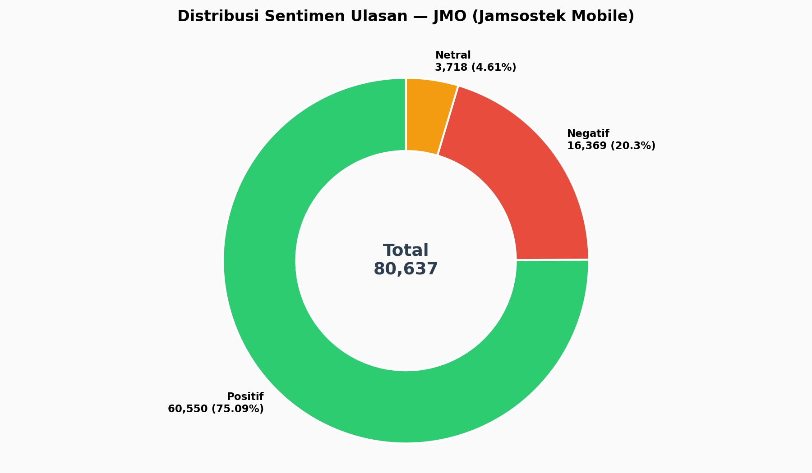
Nama file: 01_sentiment_distribution_pie.png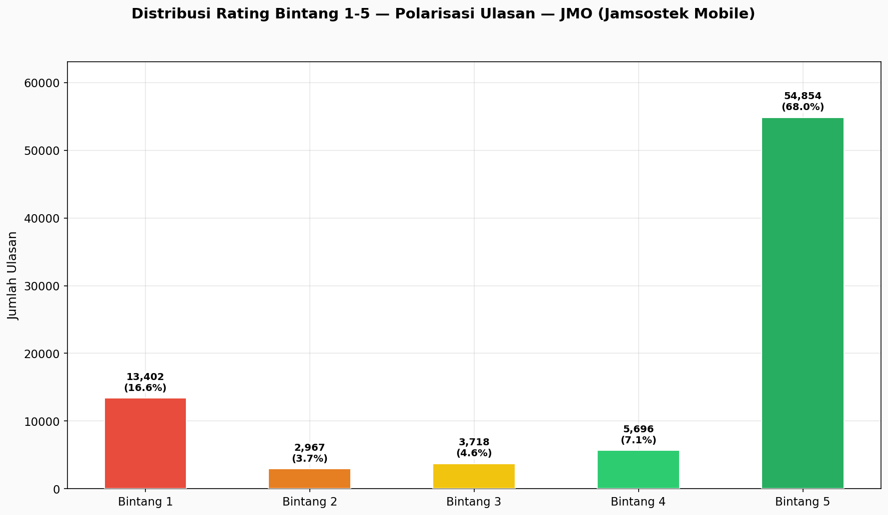
Nama file: 02_rating_distribution_raw.png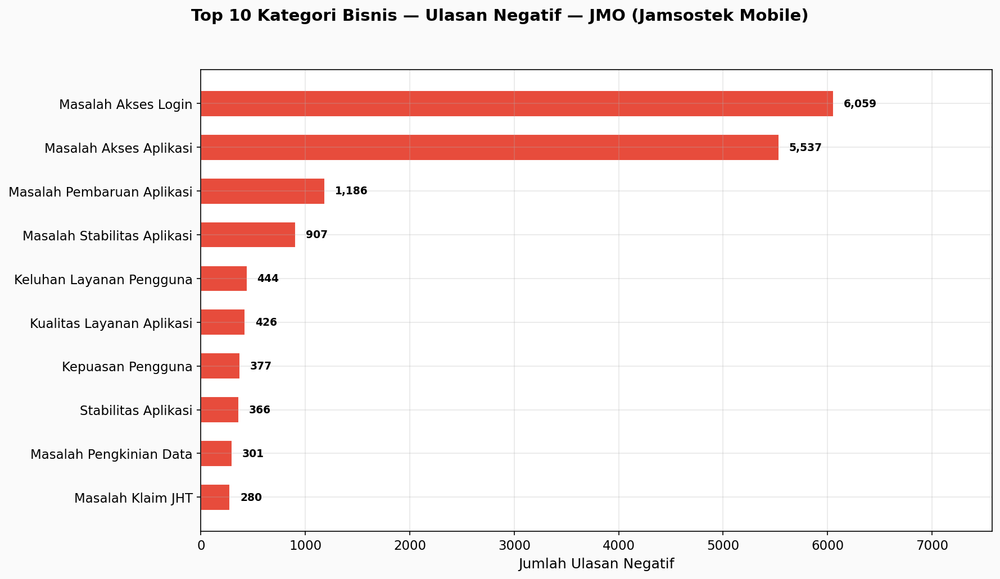
Nama file: 03_top_negative_categories.png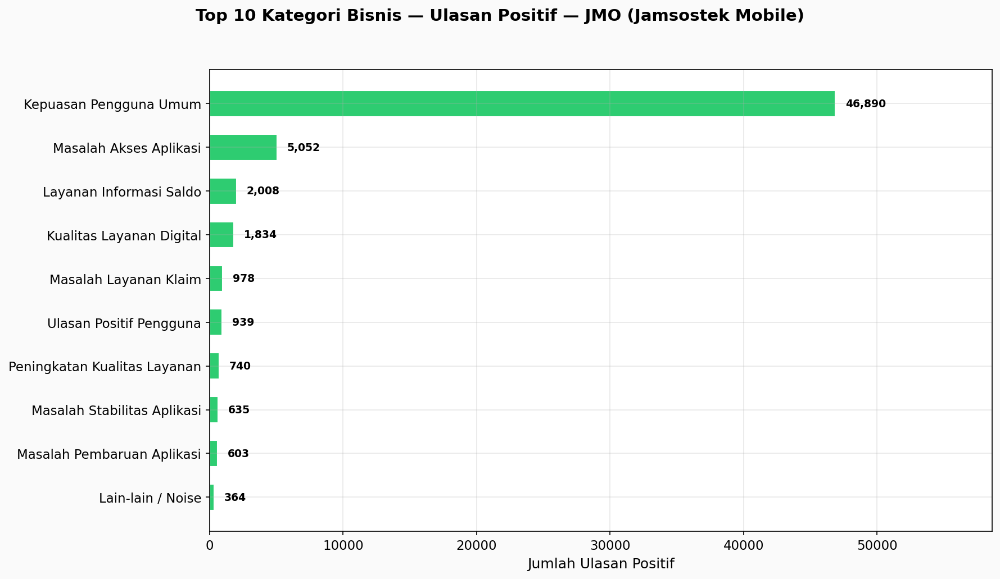
Nama file: 04_top_positive_categories.png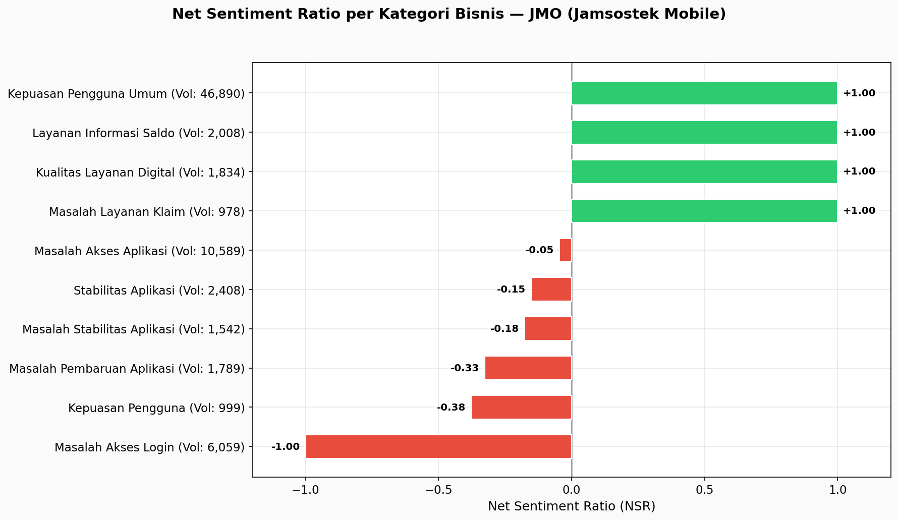
Nama file: 05_net_sentiment_ratio.png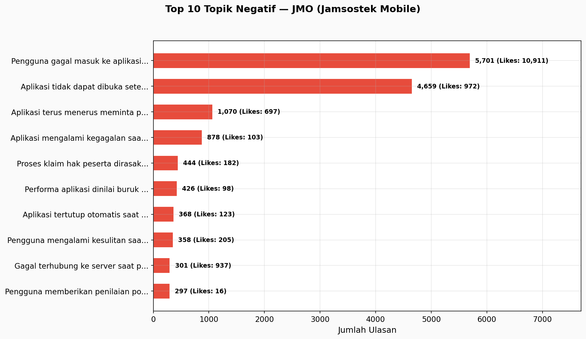
Nama file: 06_top_negative_topics.png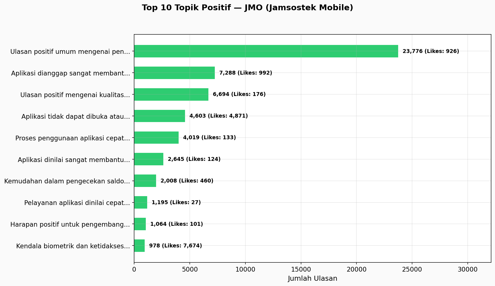
Nama file: 07_top_positive_topics.png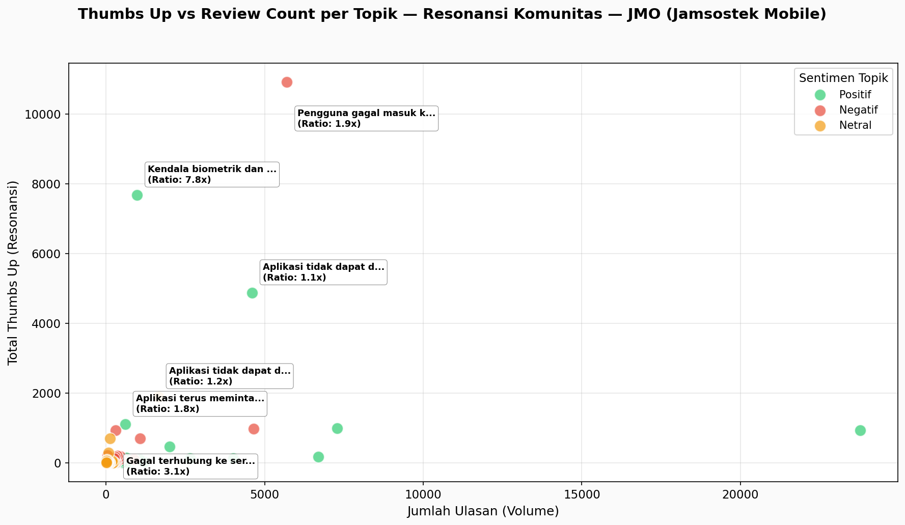
Nama file: 08_thumbs_up_vs_review_scatter.png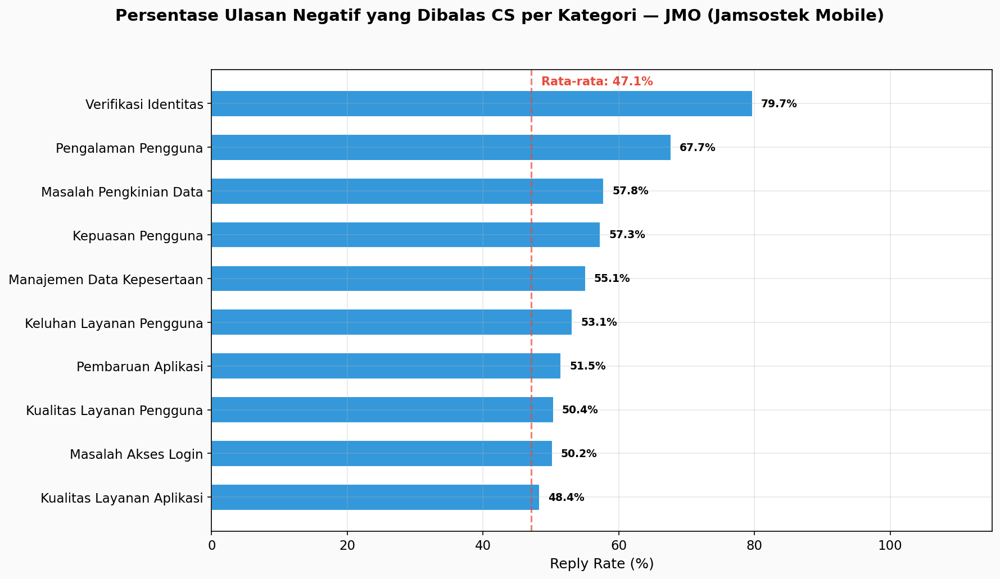
Nama file: 09_cs_reply_rate.png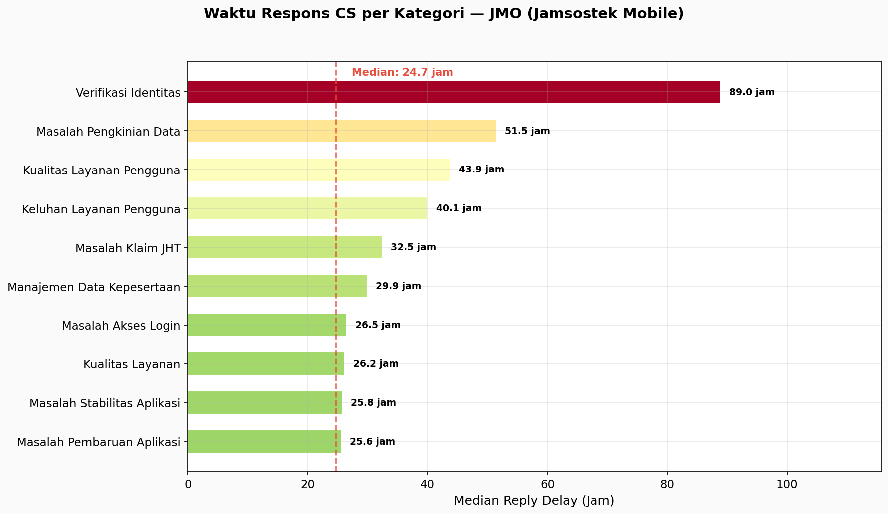
Nama file: 10_cs_reply_delay.png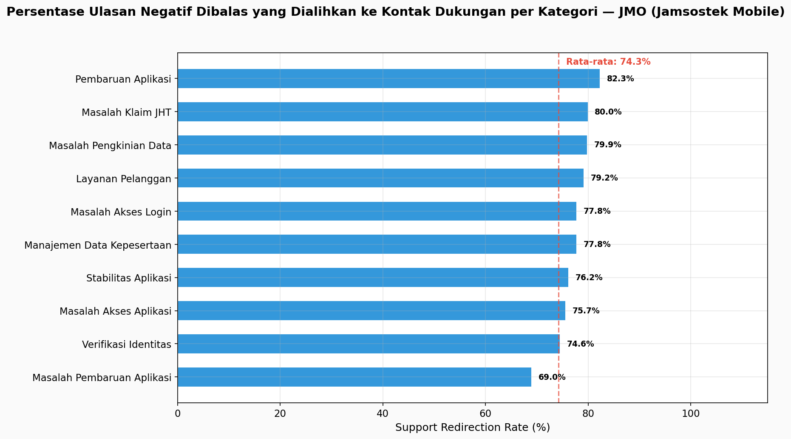
Nama file: 11_cs_support_redirect_rate.png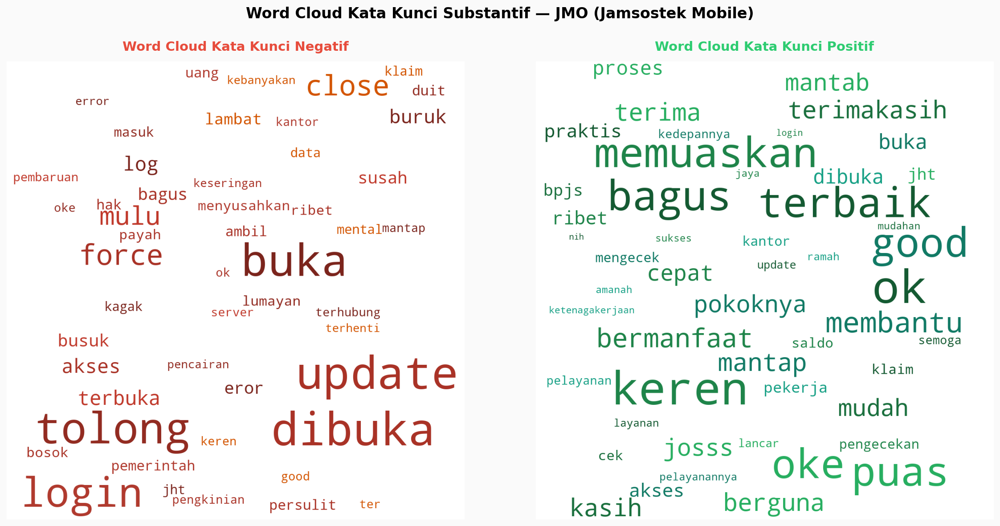
Nama file: 12_top_keywords.png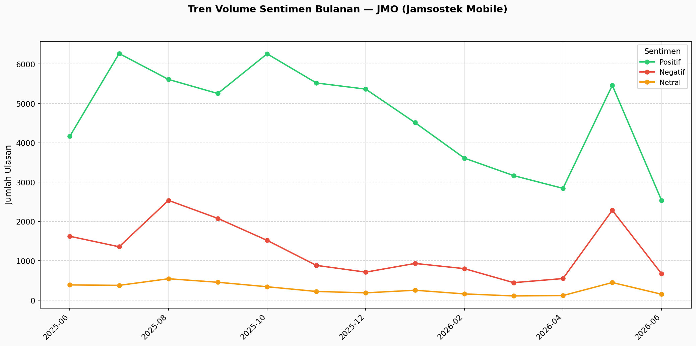
Nama file: 13_monthly_trend.png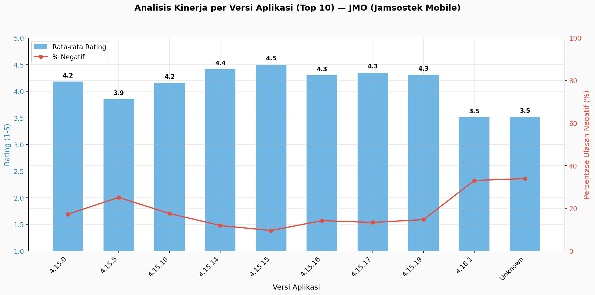
Nama file: 14_app_version_analysis.png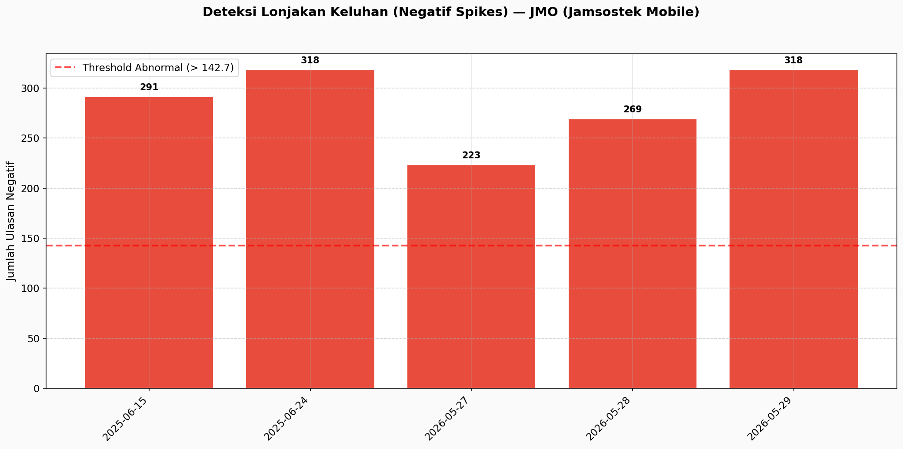
Nama file: 15_spike_detection.png